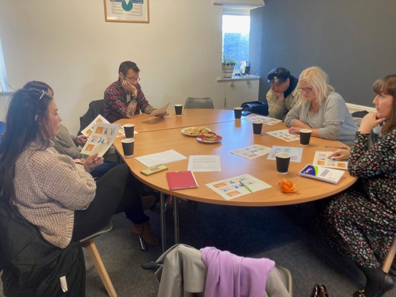

Evidence
Stakeholder Analysis
“The individual is a grain of sand”

Services did not appear to be immediately accessible in the under-served communities where we worked. We mapped relationships and interactions between various actors and institutions. We explored how individual willpower needs to be met with accessible services. Combined with macro level factors and forces, these constrain people’s agency for cessation.
The “big players” in smoking and smoking cessation were identified in the Venn diagram (bigger circles highlighted in yellow). These included the tobacco and e-cigarette manufacturers, whose main objective is to profit from selling tobacco and related products. Overlapping with tobacco companies, the next “big player” included the Government, seen as the institution that has the power to limit the affordability of cigarettes (e.g., by increasing tax).
In terms of services including smoking cessation, peer support groups were seen as non-existent (green circles). On what peer support can do where it does exist, see our podcast series Recovery Stories. Online information was discussed as a key source and potential strategy for quitting — ‘you go online for all information’, and that everyone has access. However, there were positives and negatives related to online information: help was available but the internet also provides ease of access to e-cigarettes online.
“We can have all the willpower but we need the support of other elements to be successful.”
Community participantParticipants expressed that ‘the individual is a grain of sand’ compared to the ‘bigger players’ who influence policy, marketing and availability of tobacco and related products. Individuals need their support to be successful.